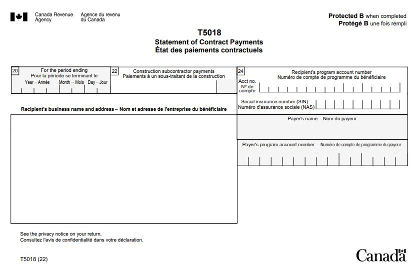

T5018 slip - Statement of contract payments
On this page
What is a T5018 slip
A T5018 slip identifies the total contract payments made to a recipient by a contractor in a calendar year or fiscal period. The T5018 reporting requirement is part of the CRA's effort to promote compliance in the construction industry and to reduce activity in the underground economy.
You can get a Form T5018 in a PDF or PDF fillable/saveable format to file on paper.
Sample
{kind=link}
When to issue
If you are an individual, partnership, trust, or corporation involved in construction activities, you must issue a T5018 slip or provide a listing/printout if all of the following apply:
- Your primary source of business income is more than 50% from construction activities
- Payments were made to Canadian resident subcontractors for construction services performed inside or outside Canada
- Total of all payments in the calendar year to a subconstractor were more than $500, not including GST/HST (payments made for goods only do not have to be reported)
If a subcontractor performs services as an employee in addition to services as a subcontractor, the employment income should be reported on a T4 and the subcontract work is reported on a T5018.
What is considered the primary source of business income
If more than 50% of a business' income-earning activities are construction, the primary source of business income is considered to be construction.
In many cases there are businesses that have significant amounts of construction done for them or by them, but this activity is not their principal business and the business does not have to report under the contract payment reporting (CPRS).
Example
A natural gas company does large amounts of construction to install pipelines. The principal business is gas transmission and not constructing pipelines.
In this situation, the company is not required to report under the CPRS. However, the CRA will accept the T5018 return if the company sends it.
Learn more about the codes for the construction sector: Code 23 - Construction - NAICS (North American Industry Classification System)
List of examples of common construction activities
Examples of construction activities
- Air conditioning work
- Asphalt paving
- Carpet work
- Commercial refrigeration work (for example, the refrigerator is large and a component part of the building)
- Concrete pouring and finishing
- Demolition
- Dry and wet heating
- Drywalling
- Duct and sheet metal work
- Electrical work
- Elevator and escalator work
- Environmental control work
- Excavating and grading
- Fencing
- Finish carpentry
- Form work
- Gas pipe work
- Glass and glazing work
- Hardwood flooring installation
- Heavy equipment rental with an operator (if there is no operator, it is just rental and not a construction activity)
- Insulation work
- Masonry work
- Painting and decorating
- Pile driving
- Plastering and stucco
- Plumbing
- Precast concrete installation
- Resilient flooring and carpet work
- Roofing and shingling
- Rough and framing carpentry
- Septic system installation
- Sheet metal and built-up roofing
- Shingling
- Siding work
- Sprinkler system work
- Steel reinforcing
- Structural steel erection
- Swimming pool installation
- Terrazzo and tile work
- Tile work
- Water well drilling
- Wrecking and demolition
Examples of structures, surfaces or sub-surface construction
Items that are considered to be structures or surface/sub-surface construction
- Apartment buildings
- Gas and oil pipelines
- Highways, streets and bridges
- Hydroelectric power plants
- Industrial and commercial buildings
- Personal homes and residences
- Power and telecommunication transmission lines
- Waterworks and sewage systems
Items that are not considered to be structures or surface/sub-surface construction
- Planes
- Satellites
- Ships
What is required if the T5018 is not issued
If you are not filling out a T5018, you must send the CRA a listing or printout of all payments you make to subcontractors. You must provide the information on a line by line basis, in column format with all the information required on the T5018 slip.
The listing or printout should include all of the following information:
- All the summary information, including the total payments to each of the subcontractors
- Total number of subcontractors who received these payments
- The signature of an authorized person
What to report
What to report and not report on a T5018
Report
- Payments to resident of Canada subcontractors for construction services provided inside or outside Canada
- Amounts paid or credited, whether by cheque, cash, barter, or offset against an amount owing
Do not report
- Payments to non-resident of Canada subcontractors for construction services provided inside or outside Canada, use: T4A-NR slip
- If the construction activity is not your primary source of business income , use: T4A slip
- Payments made for goods only
Contractors' cheques in the name of multiple subcontractors
This is sometimes done to ensure that a subcontractor's sub-trades are paid in order to minimize the possibility of liens against the job.
Contractors report only on those subcontractors they deal with directly. In this situation, the contractor reports the amount as a payment to the subcontractor. The subcontractor is responsible for reporting the amount as payment to the subtrade.
Example
ABC General Contractor Inc. has a contract with XYZ Drywallers Ltd. to install drywall. XYZ has part of the work done by MNOP Plasters Inc. XYZ owes MNOP $1,000 for the work. ABC writes a cheque out to XYZ Drywallers Ltd. and MNOP Plasters Inc. in the amount of $1,000. These amounts are reported as follows:
- ABC reports the $1,000 payment to XYZ Drywallers Ltd., since it contracted with XYZ.
- XYZ reports the $1,000 payment to MNOP Plasters Inc., since it contracted with MNOP.
What are the guidelines for filling out slips
Do
- If you have multiple payroll accounts, file a separate T5018 return for each payroll account based on the account that the payments were made from
- Amounts are reported on a T5018 slip for the year in which it is paid
- Report, in dollars and cents, all amounts you paid during the year
- Report all amounts in Canadian dollars, even if they were paid in another currency. Learn more about the average exchange rates: Exchange rates
Do not
- Do not show negative dollar amounts on slips, to make changes to previous years. Learn more: Make corrections after filing
- If a box does not have a value, do not enter "nil" or "N/A", leave the box blank
- Do not change the headings of any of the boxes
- Do not enter hyphens or dashes between numbers
- Do not enter the dollar sign ($)
How to fill out
Box 20 – For the period ending
Enter the last day of the payer's reporting period in which the payment was made to the recipient.
Box 22 – Construction subcontractor payments
Report the total amount of payments you made to the subcontractor during the period.
Include GST/HST and PST (where applicable) in the amount reported in box 22.
Under the CRA administrative policy, a slip or a printout must be issued if the total of all payments in the reporting period were more than $500 (do not include GST/HST) per subcontractor.
If a subcontractor was paid through the bartering of goods or services, the fair market value of the bartered goods or services would form part or the entire amount that has to be reported.
Learn more: Payments of fees for services.
Box 24 – Recipient's program account number or Social insurance number (SIN)
Enter either the recipient’s:
- 15-character account number (for example, 123456789RT0001)
- SIN
To verify if the subcontractor is registered for GST/HST, go to Confirming a GST/HST account number
Recipient's business name and address
Enter the name and address of the business or person to whom you made the payment.
Payer's name
Enter your business or individual name.
Payer's program account number
Enter your 15-character account number (for example, 123456789RZ0001) on your copy and the copy you send to the CRA only.
Do not enter your account number on the copies you give to the contractors.